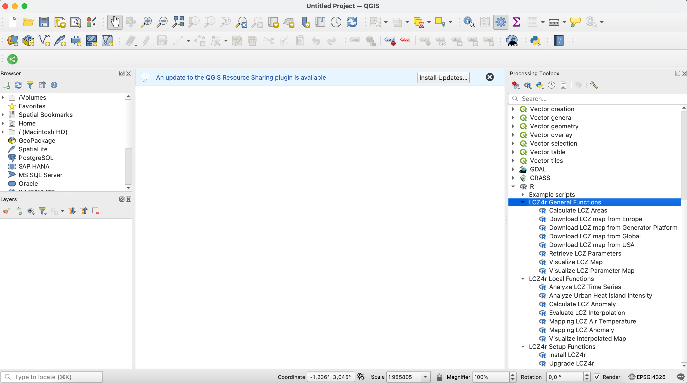

Introduction to LCZ4r-QGIS plugin
Max Anjos
March 30, 2025
Source:vignettes/Introd_QGIS_LCZ4r.Rmd
Introd_QGIS_LCZ4r.RmdA Multilingual Integration
A LCZ4r-QGIS plugin repository that integrates the LCZ4r package with QGIS in multiple languages. It facilitates the integration of the General Functions and Local Functions from LCZ4r package into QGIS, allowing users to analyze Local Climate Zones (LCZ) and urban heat islands directly within the QGIS environment.


Key Features
Seamless Integration: smooth interaction between QGIS and the LCZ4r package, enabling users to leverage R’s statistical and graphical capabilities within the QGIS interface
User-Friendly Interface: accessible for users familiar with QGIS, making complex analyses simpler to execute without requiring extensive programming knowledge.
Urban Climate Analysis: tools for analyzing and visualizing Local Climate Zones and urban heat islands.
🗃️ Install plugin
For detailed installation instructions, please visit the LCZ4r installation guide.
Translation plugin process
The translation process evolves three levels:
Human Translation
The functions and documentations of the LCZ4r were translated manually by experts familiar with Climatology, LCZ and GIS.
Contact
Please feel free to contact us if you have any questions or suggestions by emailing maxanjos@campus.ul.pt. If you are interested in contributing to the development of this LCZ4r-QGIS plugin, we welcome you to join our team.